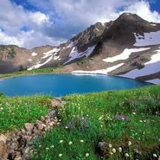
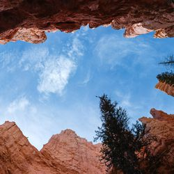
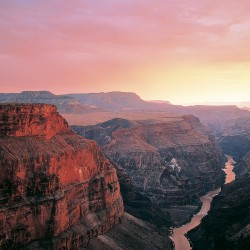
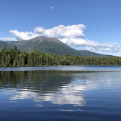
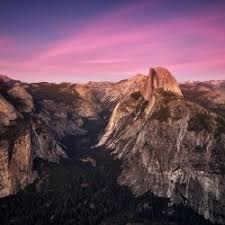

Welcome to our National Park Adventure Generator! Below you will be able to search for national parks by state code from the first search bar and will also be able to search air quality via the second search bar.





"Still round the corner there may wait a
new road or a secret gate, and though I
oft have passed them by, a day will
come at last when I shall take the
hidden paths that run west of the moon,
east of the sun."
-Frodo Baggins